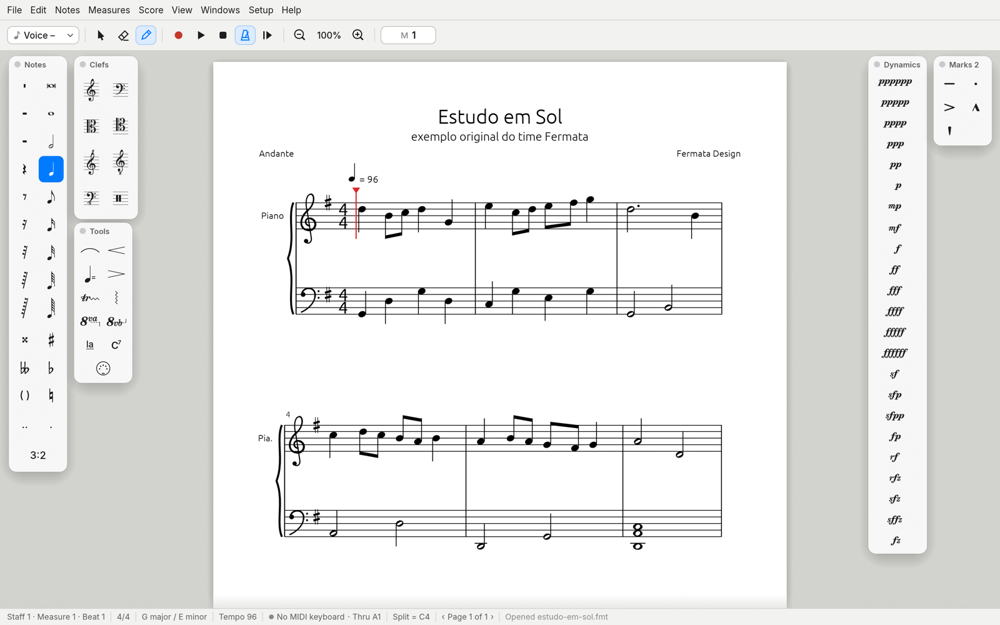

Fermata
O editor de partituras gratuito, com paletas flutuantes, um atalho para cada comando e o teclado MIDI escrevendo na pauta.
Baixar para Mac.dmg · macOS 10.13 ou mais novo · Intel e Apple SiliconBaixar para Windows.zip · Windows 10 e 11, 64 bits
O download começa e a página do seu sistema mostra como instalar.
Fluxo clássico
A página no centro, paletas em volta e um atalho para cada comando.
Toque e veja
Ligue o teclado MIDI e grave em tempo real, ou escreva nota a nota no teclado do computador.
Arquivos antigos de volta
Abre arquivos .enc (compatível com arquivos do Encore) e MIDI. Exporta MIDI e MusicXML.
Claro ou escuro
Segue o sistema, ou escolha em View ▸ Appearance. A partitura fica sempre no papel branco.
Versões
0.3.3mais recentePrimeira versão para Windows e o logo Traço no About.Notas da versão
Todas as versões
- 0.3.3Primeira versão para Windows e o logo Traço no About.Ver e baixar
- 0.3.2Escolha o tema no app: View ▸ Appearance (igual ao sistema, claro ou escuro).Ver e baixar
- 0.3.1Instalador novo: janela maior, com o Fermata e a pasta Applications lado a lado.Ver e baixar
- 0.3.0Diálogos e menus no estilo novo e o ícone Traço.Ver e baixar
- 0.2.0Visual novo: modo claro e escuro, barra enxuta, paletas com símbolos Bravura.Ver e baixar
- 0.1.0Primeira versão.Ver e baixar